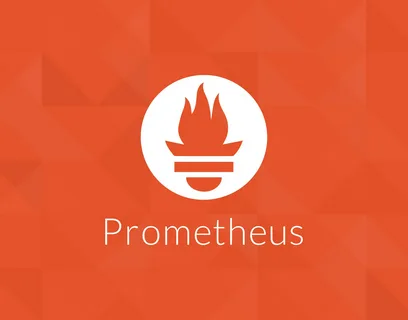

Hi, I'm Leonid Chupakhin
I am a SOC analyst. I specialize in threat monitoring, incident investigation, and configuring detection systems (SIEM, IDS/IPS).

About Me
Experienced SOC analyst with 3 years of experience in a corporate security monitoring center. I specialize in in-depth analysis of complex incidents, threat hunting, and developing correlation rules for Splunk. Key achievements: implemented 15+ custom detection rules for APT attacks, which increased threat detection by 40%; led the investigation of a data breach within the company perimeter, locating the source in 4 hours. Proficient in Python for log analysis automation and familiar with cloud security (AWS, Azure). I aim to develop expertise in proactive threat detection and mentoring junior analysts.
Purposeful, determined, athletic, and communicative. I never let the team down, polite, sociable, participate in corporate events. Ready to work for the benefit of the company and the team. I approach work responsibly, which affects the results.
Skills

PrometheusProjects
Automated CI/CD Pipeline
Implemented a secure CI/CD pipeline for a microservices application in a cloud environment (Kubernetes, EKS). Key security measures: - Isolation of GitLab runners in separate namespaces; - Secrets management through HashiCorp Vault; - Container image vulnerability scanning (Trivy) and policy compliance checks (OPA); - Collection and sending of pipeline logs to a SIEM system for correlation with network and host events. Result: ensured the pipeline's compliance with CIS Kubernetes Benchmark and PCI DSS requirements, reducing infrastructure compromise risks.
Blue Team Lab (Security Lab)
Tested detection rules in the threat-detection-lab environment: developed Sigma rules for detecting lateral movement (PsExec, WMI), achieved 92% accuracy on test data.
Traffic analysis
Collected and analyzed network traffic to identify suspicious activity and cyber threats; filtered and decoded packets by IP addresses, ports, and protocols (DNS, HTTP, SMB, RDP, etc.); identified anomalies: unusual data volumes, suspicious ports/protocols, beaconing (C2 server signals); investigated incidents — built attack chains from initial access to data exfiltration; correlated network events with endpoint logs (Windows Event Log, Sysmon) and EDR alerts; determined indicators of compromise (IoC): malicious IPs, domains, URLs, file hashes; classified attacks according to the MITRE ATT&CK matrix (e.g., lateral movement, C2 communication); prepared reports with event chronology, involved nodes, and response recommendations; configured detection and alerting rules to prevent recurrent attacks; blocked malicious connections on the firewall and isolated infected nodes.